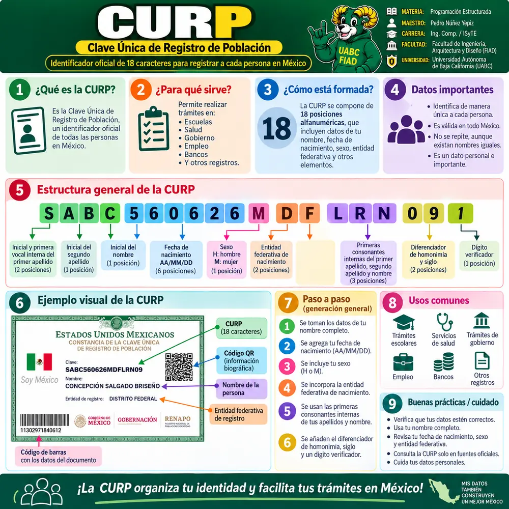
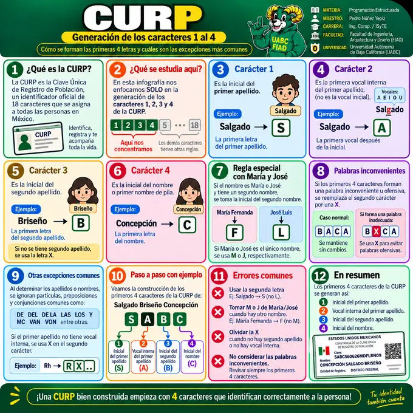
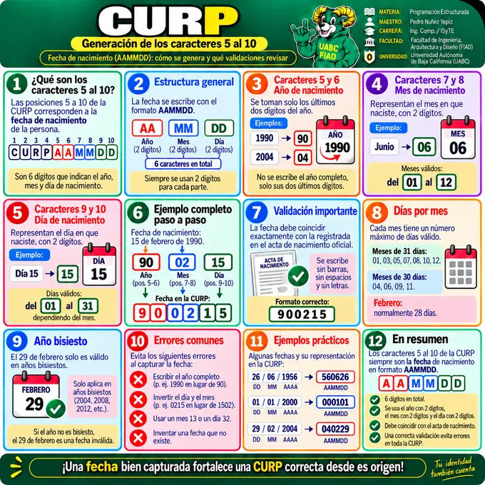
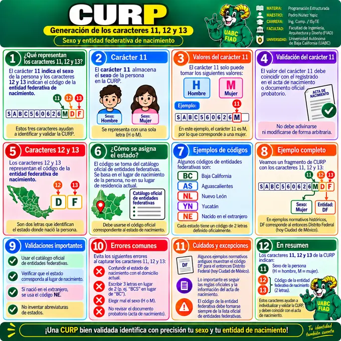
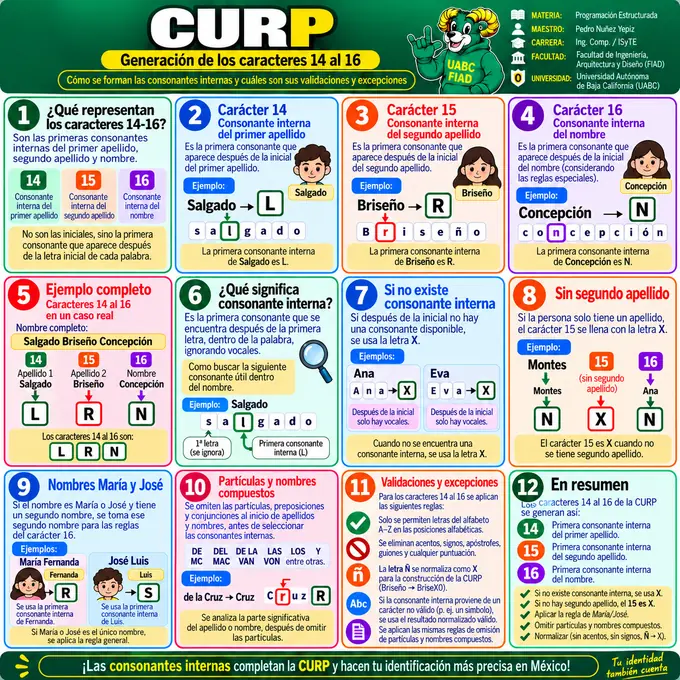
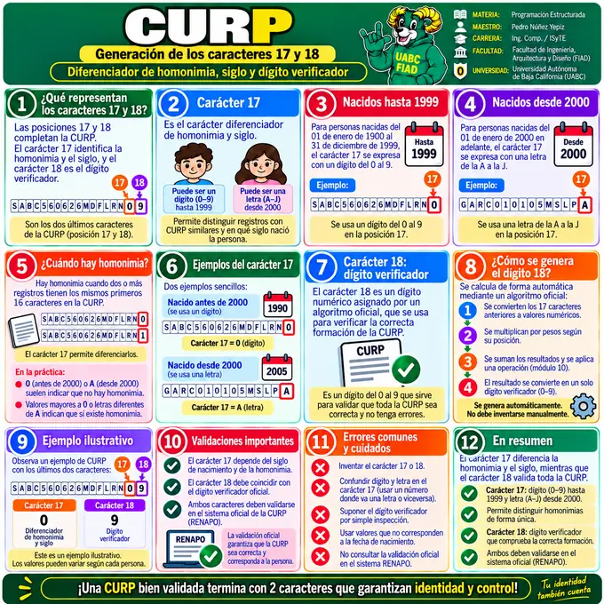
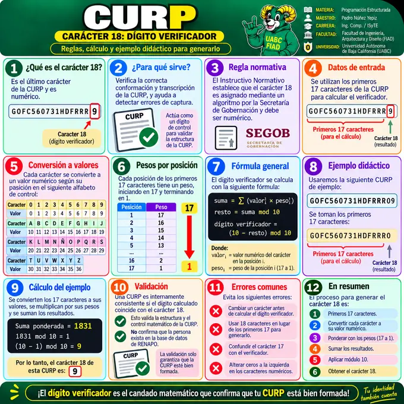

🪪 Galería visual · CURP
La primera infografía presenta el panorama general. Después se estudia la CURP por bloques de caracteres: 1–4, 5–10, 11–13, 14–16, 17–18 y finalmente el dígito verificador.
Para que la página cargue más rápido, aquí se muestran miniaturas optimizadas. Al seleccionar Ver y ampliar se carga la imagen original en resolución completa.

1 · CURP · Panorama general
Definición, propósito, estructura general de 18 caracteres, ejemplo visual, usos comunes y recomendaciones.

2 · Caracteres 1 al 4
Inicial y vocal interna del primer apellido, inicial del segundo apellido, inicial del nombre y excepciones comunes.

3 · Caracteres 5 al 10
Fecha de nacimiento en formato AAMMDD, validación de año, mes, día y casos de año bisiesto.

4 · Caracteres 11, 12 y 13
Sexo y entidad federativa de nacimiento, códigos estatales, validaciones y excepciones.

5 · Caracteres 14 al 16
Consonantes internas del primer apellido, segundo apellido y nombre, incluyendo reglas especiales.

6 · Caracteres 17 y 18
Diferenciador de homonimia, siglo y dígito verificador con ejemplos y validaciones.

7 · Carácter 18 · Dígito verificador
Conversión de caracteres, pesos por posición, fórmula, ejemplo didáctico, validaciones y errores comunes.
Las miniaturas utilizan formato
WebP y las imágenes secundarias usan
carga diferida. Las imágenes PNG originales solo se utilizan cuando el usuario abre
el visor.